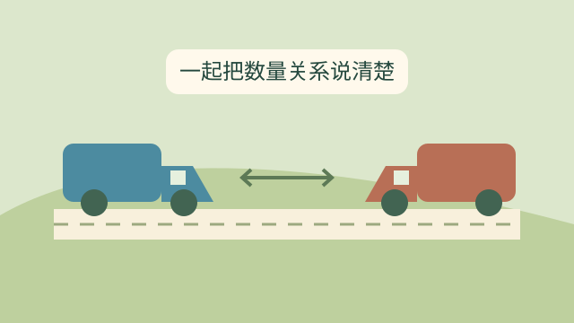
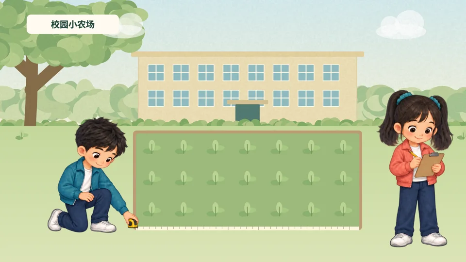

第三单元数量关系与解决问题快捷的物流运输从采购单到配送路线，先说清每个量，再看它们怎样联系。总价、单价与数量↗路程、速度与时间↗两车到仓库：各自的时间↗相遇问题：原讲解与六种探索↗单元综合：自己决定怎样做↗进入单元 →
第六单元小数的意义与性质校园小农场量一量、称一称，从具体数量理解小数。小数的意义组成与读写↗小数的性质和大小比较↗小数点移动引起大小变化↗小数与单位换算↗小数的近似数与改写↗进入单元 →